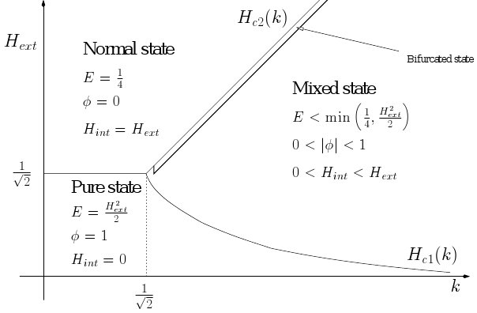

Ginzburg Landau model
My PhD thesis was on the bulk Ginzburg-Landau model of superconductivity. This is a partial differential equation model depending on a structural parameter k and the exterior field Hext. The internal states of the model are described by an interior magnetic field Hint and a complex valued wave function phi. By using the Bochner Kodaira Nakano formula of complex hermitian geometry, I established the classical form of the phase diagram with the pure state region (phi=1 all electron supraconductor), the normal region (phi=0 no electron supraconductor) and the mixed region where both kinds of electron coexist:

I also established the Abrikosov asymptotic expansion in the bifurcated region for the minimal energy and the states realizing it.
L M. Dutour, Phase diagram for Abrikosov lattice, Journal of Mathematical Physics 42 (2001) 4915--4926.